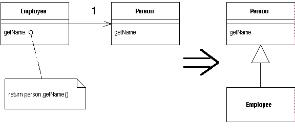

Replace Delegation with Inheritance
You're using delegation and are often writing many simple
delegations for the entire interface.
Make the delegating class a subclass of the delegate.

For more information see page
355
of Refactoring
| Refactoring Home | | Alphabetical List |